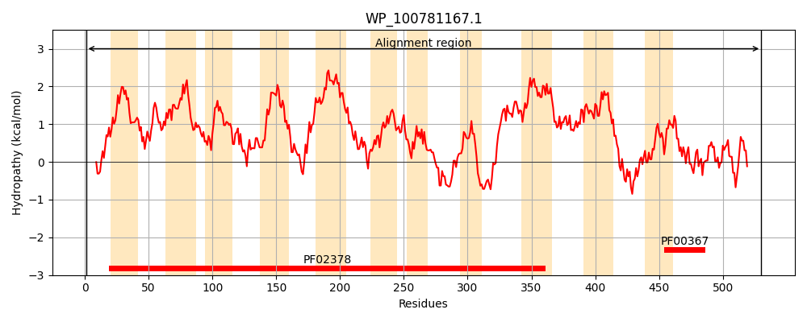
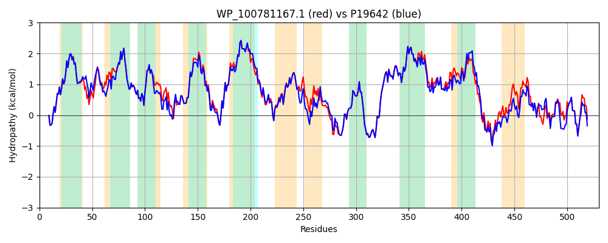

Hit Accession: P19642
Hit TCID: 4.A.1.1.3
Hit Description: gnl|BL_ORD_ID|9317 gnl|TC-DB|P19642|4.A.1.1.3 PTS system, maltose and glucose-specific IIABC component (Maltose and glucose-permease IIABC component) (Phosphotransferase enzyme II, ABC component) (EC 2.7.1.69) - Escherichia coli.
Mach Len: 530
e:0.000000
Query TMS Count : 11
Hit TMS Count: 8
TMS-Overlap Score: 7.950000
Predicted Substrates:CHEBI:6668;maltose
BLAST Alignment:
Score: 2467 , Bit scores: 954 bits, E-value: 0.0e+00, Alignment length: 530, Percentage identity: 89
Query: 1 MTAKTAPKITLWEFFQQLGKTFMLPVALLSFCGIMLGIGSSLSSHDVLTLLPWLDMPLLQAIFIWMSKVGSFAFSFLPVMFCIAIPLGLARENKGVAAFAGFVGYAVMNLAVNFWLTAKGILPTTDAAILKANNIQNIIGIPSIDTGILGAVIAGIIVWLLHERFHNIRLPDALAFFGGTRFVPIITTVVLGLVGLAIPLVWPVFAMGINALGKMINSAGDFGPMIFGTGERLLLPFGLHHILVALIRFTEAGGTLDVCGHSVSGALTIFQAQLNCPTTHGFSESATRFLSQGKMPAFLGGLPGAALAMYHCARPENRHKIKGLLISGVIACVVGGTTEPLEFLFLFVAPVLYVIHALLTGLGFTIMAVLGVTIGNTDGNIIDFVVFGILHGLATKWYLVPVVAAIWFAVYYAIFRFAITRFNLKTPGRDIDTAASVEKAVAGTIGKSGYNVPAILAALGGAENIVSLDNCITRLRLSVHDMSKVDAAALKAHRAIGVVQLNQHNLQVVIGPQVQSVKDEMAVLMNTVQA 530
MTAKTAPK+TLWEFFQQLGKTFMLPVALLSFCGIMLGIGSSLSSHDV+TL+P L P+LQAIF WMSK+GSFAFSFLPVMFCIAIPLGLARENKGVAAFAGF+GYAVMNLAVNFWLT KGILPTTDAA+LKANNIQ+I+GI SIDTGILGAVIAGIIVW+LHERFHNIRLPDALAFFGGTRFVPII+++V+GLVGL IPLVWP+FAMGI+ LG MINSAGDFGPM+FGTGERLLLPFGLHHILVALIRFT+AGGT +VCG +VSGALTIFQAQL+CPTTHGFSESATRFLSQGKMPAFLGGLPGAALAMYHCARPENRHKIKGLLISG+IACVVGGTTEPLEFLFLFVAPVLYVIHALLTGLGFT+M+VLGVTIGNTDGNIIDFVVFGILHGL+TKWY+VPVVAAIWF VYY IFRFAITRFNLKTPGRD + A+S+EKAVAG GKSGYNVPAIL ALGGA+NIVSLDNCITRLRLSV DMS V+ ALK +RAIGVVQLNQHNLQVVIGPQVQSVKDEMA LM+TVQA
Sbjct: 1 MTAKTAPKVTLWEFFQQLGKTFMLPVALLSFCGIMLGIGSSLSSHDVITLIPVLGNPVLQAIFTWMSKIGSFAFSFLPVMFCIAIPLGLARENKGVAAFAGFIGYAVMNLAVNFWLTNKGILPTTDAAVLKANNIQSILGIQSIDTGILGAVIAGIIVWMLHERFHNIRLPDALAFFGGTRFVPIISSLVMGLVGLVIPLVWPIFAMGISGLGHMINSAGDFGPMLFGTGERLLLPFGLHHILVALIRFTDAGGTQEVCGQTVSGALTIFQAQLSCPTTHGFSESATRFLSQGKMPAFLGGLPGAALAMYHCARPENRHKIKGLLISGLIACVVGGTTEPLEFLFLFVAPVLYVIHALLTGLGFTVMSVLGVTIGNTDGNIIDFVVFGILHGLSTKWYMVPVVAAIWFVVYYVIFRFAITRFNLKTPGRDSEVASSIEKAVAGAPGKSGYNVPAILEALGGADNIVSLDNCITRLRLSVKDMSLVNVQALKDNRAIGVVQLNQHNLQVVIGPQVQSVKDEMAGLMHTVQA 530 | Protein Hydropathy Plots: |
|---|
|  |  |
Pairwise Alignment-Hydropathy Plot:
|
|---|
|  |